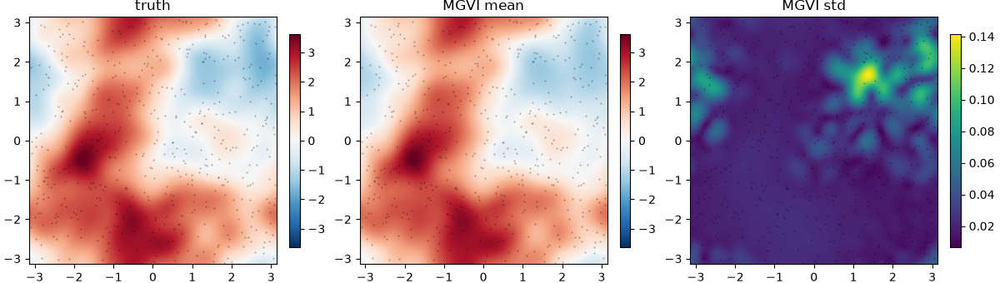
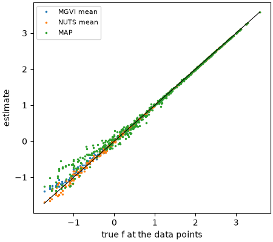

Fitting a GP field with VI, NUTS and MAP¶
A complete example of the priors and inference workflow, end to end:
- Simulate data from a known log-normal field.
- Fit it with MGVI (NIFTy.re).
- Fit the same posterior with NUTS (BlackJAX) and MAP (optax).
- Compare the field from the three.
It runs on a laptop CPU in about a minute. The figures on
this page are produced by this code (docs/examples/make_figures.py
regenerates them).
The model and simulated data¶
A field f(x, y) is a Matérn-3/2 Gaussian process, observed at 500 random points as d = exp(f) + noise. It is a stand-in for a line-flux map.
import equinox as eqx
import jax
import jax.numpy as jnp
from jax import random
from spectracles import FourierGP, Matern32, Parameter, SpatialDataGeneric, build_model
from spectracles.inference import GaussianLikelihood, LatentSpace, Posterior
from spectracles.priors import LogNormal
jax.config.update("jax_enable_x64", True)
class LogGP(eqx.Module):
gp: FourierGP
def __call__(self, data):
return self.gp(data)
kernel = Matern32(
length_scale=Parameter(prior=LogNormal(0.6, 0.2)),
variance=Parameter(prior=LogNormal(1.0, 0.5)),
)
model = build_model(LogGP, FourierGP(kernel, n_modes=(15, 15)))
latent = LatentSpace(model)
N = 500
k_xy, k_truth, k_noise = random.split(random.PRNGKey(0), 3)
xy = random.uniform(k_xy, (2, N), minval=-jnp.pi, maxval=jnp.pi)
points = SpatialDataGeneric(x=xy[0], y=xy[1], idx=jnp.arange(N))
def forward(m):
return jnp.exp(m(points))
# The truth is a draw from the prior, hyperparameters included
truth = latent.sample_prior_latent(k_truth)
noise = 0.05
data = forward(latent.to_model(truth)) + noise * random.normal(k_noise, (N,))
posterior = Posterior(latent, forward, GaussianLikelihood(data, jnp.full(N, noise**-2)))
MGVI¶
import nifty.re as jft
from spectracles.nifty import to_nifty
lh = to_nifty(posterior)
n_iterations = 15 # fast in tests: 3
k_init, k_vi = random.split(random.PRNGKey(1))
samples, _ = jft.optimize_kl(
lh,
jft.Vector(lh.init(k_init)),
key=k_vi,
n_total_iterations=n_iterations,
n_samples=4,
sample_mode="linear_resample", # "nonlinear_resample" for geoVI
kl_kwargs={"minimize_kwargs": {"maxiter": 20}},
)
posterior.summary(samples, true_latents=truth) # with the truth, since we simulated the data
To see the field, evaluate each sample on a grid:
import matplotlib.pyplot as plt
import numpy as np
n = 100
g = jnp.linspace(-jnp.pi, jnp.pi, n, endpoint=False)
gx, gy = jnp.meshgrid(g, g, indexing="ij")
grid = SpatialDataGeneric(x=gx, y=gy, idx=jnp.arange(n * n))
f_true = latent.to_model(truth)(grid).reshape(n, n)
f_mgvi = posterior.draws(samples, to="model")(grid).values.reshape(-1, n, n) # per sample
fig, axes = plt.subplots(1, 3, figsize=(12, 3.4), layout="constrained")
lim = float(jnp.abs(f_true).max())
panels = [
(f_true, "truth", {"cmap": "RdBu_r", "vmin": -lim, "vmax": lim}),
(f_mgvi.mean(0), "MGVI mean", {"cmap": "RdBu_r", "vmin": -lim, "vmax": lim}),
(f_mgvi.std(0), "MGVI std", {"cmap": "viridis"}),
]
for ax, (img, title, kw) in zip(axes, panels):
im = ax.imshow(np.asarray(img).T, origin="lower", extent=(-np.pi, np.pi, -np.pi, np.pi), **kw)
ax.plot(xy[0], xy[1], "k.", ms=1, alpha=0.3)
ax.set_title(title)
fig.colorbar(im, ax=ax, shrink=0.85)
fig.savefig("inference_fit.png", dpi=100)
plt.close(fig)

NUTS on the same posterior¶
BlackJAX samples posterior.log_density directly, in the same latent
coordinates. Starting from the MGVI mean saves warm-up time. This is a short
run, to show the mechanics. Real NUTS runs on GP models need long chains and
convergence checks (see How it works).
import blackjax
n_steps = 200 # fast in tests: 20
k_warm, k_draw = random.split(random.PRNGKey(2))
warmup = blackjax.window_adaptation(blackjax.nuts, posterior.log_density)
(state, params), _ = warmup.run(k_warm, samples.pos.tree, num_steps=n_steps)
nuts_step = jax.jit(blackjax.nuts(posterior.log_density, **params).step)
def one_step(state, key):
state, _ = nuts_step(key, state)
return state, state.position
_, nuts_samples = jax.lax.scan(one_step, state, random.split(k_draw, n_steps))
MAP with optax¶
import optax
optimiser = optax.adam(0.05)
ξ_map = latent.zeros()
opt_state = optimiser.init(ξ_map)
@jax.jit
def step(ξ, opt_state):
grad = jax.grad(lambda x: -posterior.log_density(x))(ξ)
updates, opt_state = optimiser.update(grad, opt_state)
return optax.apply_updates(ξ, updates), opt_state
n_map_steps = 500 # fast in tests: 20
for _ in range(n_map_steps):
ξ_map, opt_state = step(ξ_map, opt_state)
map_model = latent.to_model(ξ_map)
Comparing the field¶
All three results are latents of one posterior, so the same latent turns each
into a model. Here is the field at the data points:
f_nuts = posterior.draws(nuts_samples, to="model")(points).mean()
f_mgvi_pts = posterior.draws(samples, to="model")(points).mean()
f_true_pts = latent.to_model(truth)(points)
fig, ax = plt.subplots(figsize=(4.5, 4), layout="constrained")
ax.plot(f_true_pts, f_mgvi_pts, ".", ms=3, label="MGVI mean")
ax.plot(f_true_pts, f_nuts, ".", ms=3, label="NUTS mean")
ax.plot(f_true_pts, map_model(points), ".", ms=3, label="MAP")
lims = [float(f_true_pts.min()), float(f_true_pts.max())]
ax.plot(lims, lims, "k-", lw=0.8)
ax.set_xlabel("true f at the data points")
ax.set_ylabel("estimate")
ax.legend(fontsize=8)
fig.savefig("inference_compare.png", dpi=100)
plt.close(fig)

The three methods recover the field consistently. Comparing uncertainties and GP hyperparameters between methods needs much longer runs than this example; see How it works.